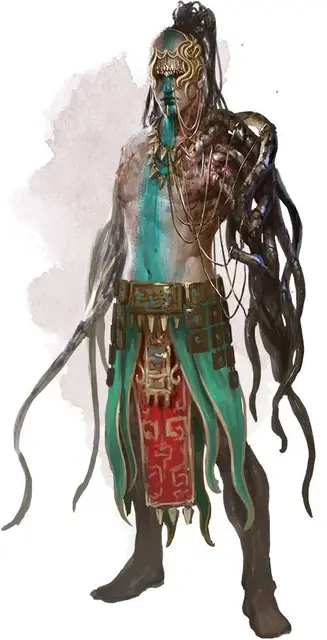

Юань-ти хозяин ямы
Yuan-ti Pit Master
Средний Монстр (Перевертыш, Юань-ти), нейтрально-злой

Класс Доспеха 14 (природный доспех)
Хиты 88 (16к8 + 16)
Скорость 30 футов
| мод | спас | ||
|---|---|---|---|
| СИЛ | 16 | +3 | +3 |
| ЛОВ | 14 | +2 | +2 |
| ТЕЛ | 13 | +1 | +1 |
| мод | спас | ||
|---|---|---|---|
| ИНТ | 14 | +2 | +2 |
| МДР | 12 | +1 | +3 |
| ХАР | 16 | +3 | +5 |
Навыки Обман +5, Скрытность +4
Иммунитет к урону яд
Иммунитет к состояниям отравление
Чувства тёмное зрение 120 футов (прозревает магическую тьму), пассивное Восприятие 11
Языки Общий, Бездны, Драконий
Опасность 5 (1800 опыта)
Бонус мастерства +3
Среда обитания Лес, Подземье, Пустыня
Особенности
Перевертыш. Юань–ти может использовать действие и превратиться в Среднюю змею или обратно в свою истинную форму. Его характеристики одинаковы в обеих формах. Любое снаряжение, которое он носит или несет, не превращается. Если он умирает, то остается в своей текущей форме.
Врождённое колдовство (только в форме юань–ти). Базовой характеристикой юань–ти является Харизма (Сл спасброска от заклинаний 13). Он может накладывать следующие заклинания без материальных компонентов:
• Неограниченно: дружба с животными [animal friendship] (только на змей).
• 3/день: внушение [suggestion].
Сопротивление магии. Юань–ти имеет преимущество на спасброски от заклинаний и других магических эффектов.
Адепт яда (2/день). В первый раз, когда юань–ти попадает рукопашной атакой в свой ход, он может дополнительно нанести 16 (3к10) урона ядом цели.
Использование заклинаний (только в форме юань–ти). . Юань–ти является заклинателем 6-го уровня. Его базовой характеристикой является Харизма (Сл спасброска от заклинаний 13, +5 к попаданию заклинаниями). Он восполняет все потраченные ячейки заклинаний после завершения короткого или продолжительного отдыха. Он знает следующие заклинания колдуна:
• Заговоры (неограниченно): мистический заряд [eldritch blast] (дистанция 300 футов, +3 бонус к каждому броску урона), дружба [friends], указание [guidance], волшебная рука [mage hand], сообщение [message], ядовитые брызги [poison spray].
• 1–3 уровень (2 ячейки 3-го уровня): приказ [command], контрзаклинание [counterspell], адское возмездие [hellish rebuke], невидимость [invisibility], туманный шаг [misty step], невидимый слуга [unseen servant], прикосновение вампира [vampiric touch].
Действия
Мультиатака (только в форме юань–ти). Юань–ти совершает две атаки укусом, используя свои змеиные руки.
Укус. . Рукопашная атака оружием: +5 к попаданию, досягаемость 5 футов, одна цель. Попадание: 5 (1к4 + 3) колющего урона плюс 7 (2к6) урона ядом.
Сон Мерршолка (1/День). . Юань–ти выбирает целями до 5 существ, которых может видеть не далее чем в 60 футах от себя. Каждая цель должна преуспеть в спасброске Телосложения Сл 13 или упасть в магический сон и потерять сознание на 10 минут. Спящая цель просыпается, если получит урон или кто–то использует действие, чтобы потрясти или дать пощечину и разбудить её. Этот магический сон не действует на существ с иммунитетом от очарования.
Описание
Я – исследователь, который любит путешествовать и проводить вечера в уютных гостиницах, а не продираться через джунгли или тащиться по пустыням через ослепляющий песок, чтобы узнать секреты змеиного народа. В свое время я встретил несколько чистокровных и стражей выводка, но если бы я встретился с юань–ти хозяином ямы, то, могу сказать с уверенностью, не был бы здесь, чтобы рассказать эту историю.
– Воло
Вы почти наверняка не согласились бы.
– Эльминстер
Хозяева ям – жрецы юань–ти, проклинатели, заключившие договор с богом Мерршаулком и стремящиеся пробудить его от дремоты путем принесения гуманоидов ему в жертву. Среди юань–ти они наибольшие традиционалисты и считают, что лучше всего приспособлены для достижения целей своего общества. Хозяева ям глубоко вовлечены в долгосрочные планы своей расы по захвату власти в правительствах гуманоидов, также, как и в планы защиты городов от обнаружения и нападения со стороны врагов. Они выступают против безрассудного поведения и предлагают медленный, осторожный подход во всех вопросах.
Этот тип проклинателей с человеческой головой и телом и змеями вместо рук.
См. дополнительно статью: "Бестиарий: Юань-ти"